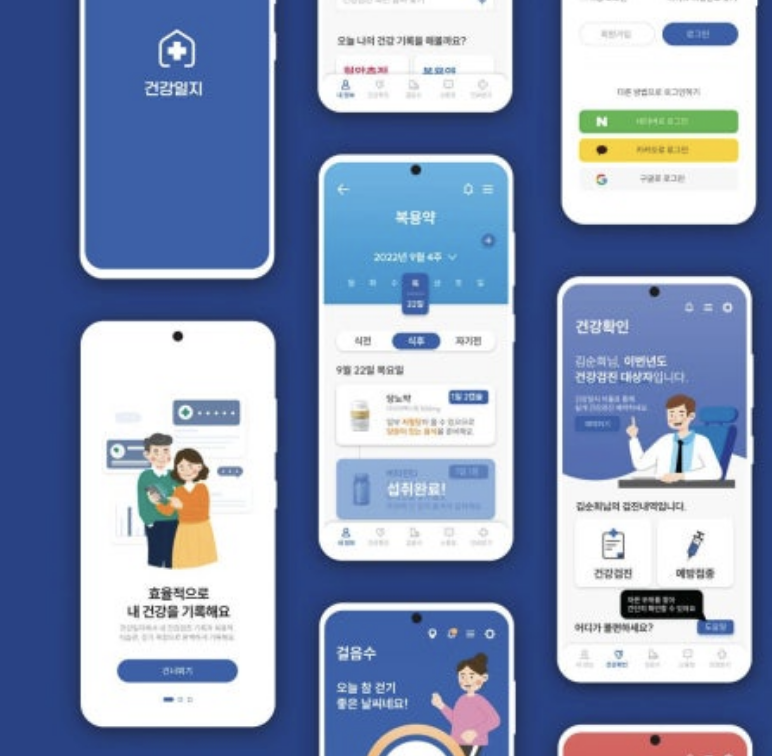
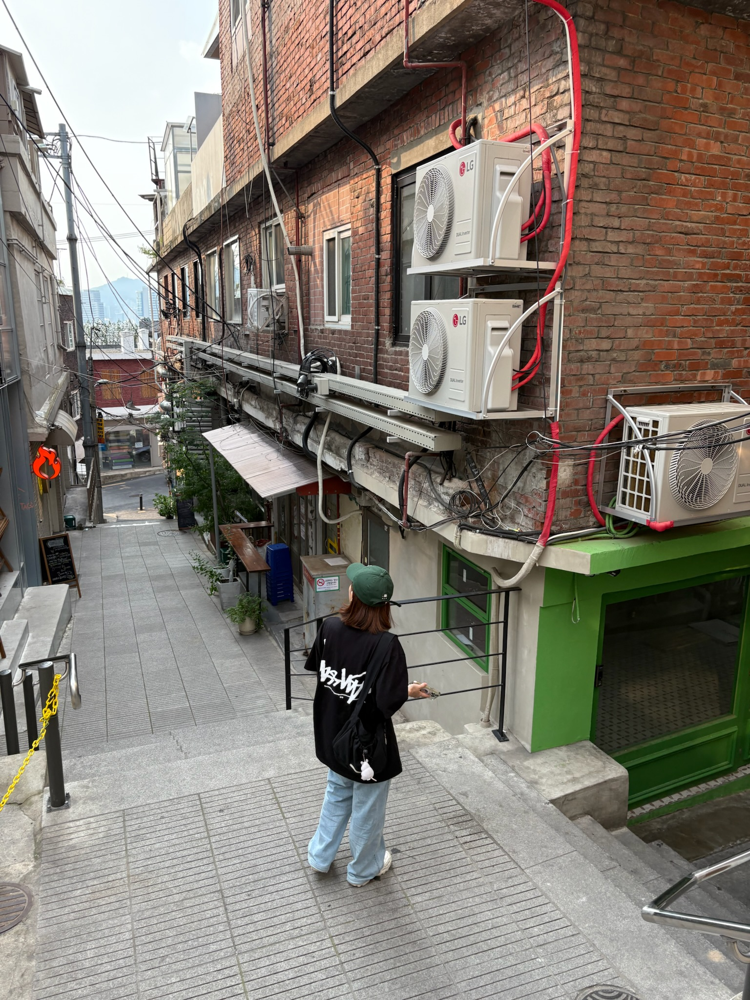

mobile app service
11/19–12/27/2025
New to UX/UI, I am exploring how to refine user flows and experience structures with clarity and precision. Through calm analysis and clean design, I aim to create meaningful and thoughtful user experiences.
mobile app service
11/19–12/27/2025

mobile app service
11/19–12/27/2025

mobile app service
11/19–12/27/2025


Baek Chan Yang
Seoul, Republic of Korea
E a0608@hanmail.net
T 02-0000-0000
@baek_gallery
I walk into a field of unfamiliar lines,
where every path waits to be understood.
With quiet attention, I trace the steps—
how a thought becomes a choice,
how a choice becomes a moment of ease.
In the gentle order of structure and flow,
I learn to shape clarity from chaos,
and design small spaces
where users can simply breathe.
